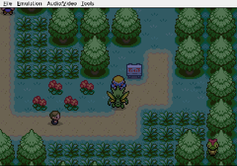
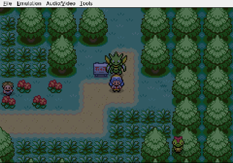
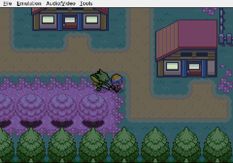
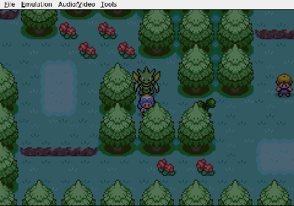
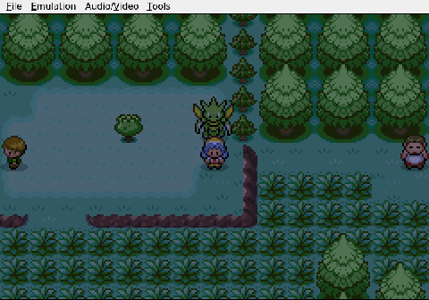
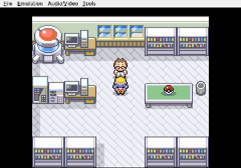

Gemini plays Pokemon Heart & Soul, Run 2
Errands, Rivals, and Silk Scarves
For five sessions Gemini has been stuck in loops, walking into walls, and generally failing to leave the first stretch of road. Session six is the one where the fetch quest actually gets fetched.


Starting inside a stranger's house on Route 30, the AI finally steps through the door and heads north. The trip to Mr. Pokémon's place goes without incident. The Mystery Egg changes hands. Professor Oak, visiting for reasons of his own, examines Gemini's Level 9 Scyther, Viper, and apparently likes what he sees: he hands over a Pokédex and tops Viper off to full health.

The moment of calm lasts about four seconds. Professor Elm calls on the Pokégear, frantic, and Gemini begins the long walk back south. The navigation is still rough. Walls are tested. Uncharted tiles are proposed. But the AI gets through Cherrygrove and onto Route 29, where the red-haired boy from outside Elm's lab is waiting. A short fight follows. The rival stares, says nothing, and leaves.

Between bouts of walking into trees, Gemini manages something genuinely clever on Route 29. It finds Tuscany of the Weekday Siblings, correctly identifies the day as Tuesday, and picks up the Silk Scarf, a tidy little boost to Viper's Quick Attack.

Back in New Bark Town, the police are already at Elm's lab investigating a break-in. Gemini identifies the thief and painstakingly types out the name SILVER, one letter at a time. A brief visit home to check in with Mom, and the AI steps back outside. The errands are done. Violet City and the first Gym wait to the west.
